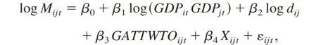
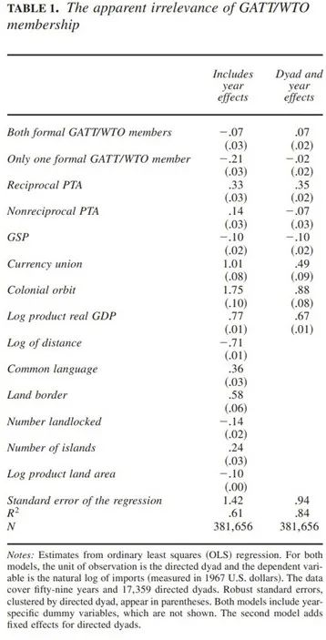
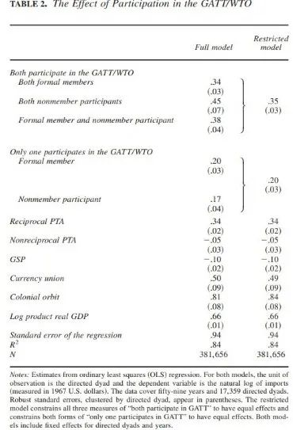
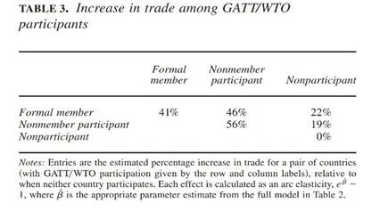
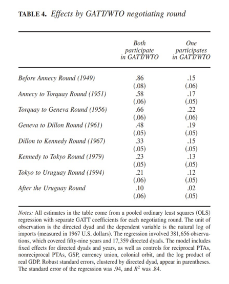
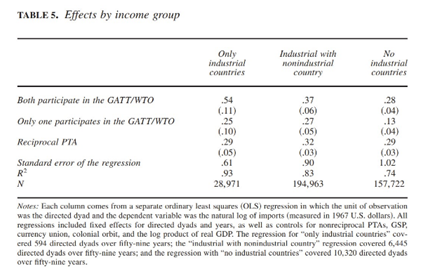
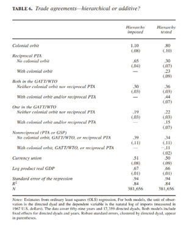
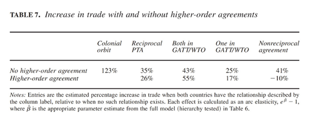
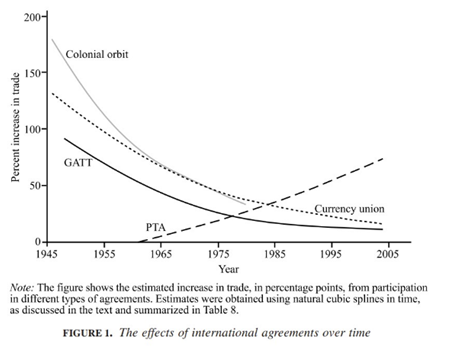
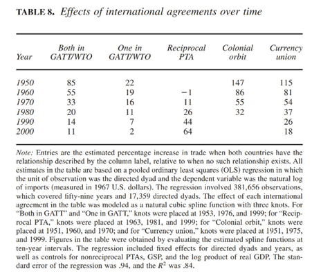

收录于合集

作品简介
作者 ： Judith L. Goldstein，斯坦福大学政治学教授，斯坦福经济政策研究所高级研究员；Douglas Rivers，斯坦福大学政治学教授，胡佛研究所高级研究员；Michael Tomz，斯坦福大学政治学教授， 斯坦福经济政策研究所高级研究员。
编译： 穆若彤（国政学人编译员，中国人民大学PPE）
来源： Judith L. Goldstein, Douglas Rivers, &Michael. Tomz. Institutions in International Relations: Understanding the Effects of the GATT and the WTO on World Trade. International Organization , Vol. 61, Issue 1 (Winter 2007), pp. 37-68. DOI: 10.1017/0S0020818307070014.
归档： 《国际关系前沿》2021年第10期，总第37期。
内容摘要
关税与贸易总协定（以下简称“关贸总协定”）和世界贸易组织（以下简称“世贸组织”）已被推崇为国际制度的典范，本文综合地评估了二战以来关贸总协定/世贸组织和其它贸易协定的影响，围绕制度身份（standing）与制度嵌入性（embeddedness）两个因素展开，展示了许多国家在关贸总协定/世贸组织中拥有权利与义务，或称制度身份，即便它们并非正式成员；本文同样扩展了这一阐述，将一系列被嵌入关贸总协定/世贸组织的其它商业协定纳入其中。本文利用了自1946年的双边贸易数据，证明了关贸总协定/世贸组织大幅促进了具有制度身份的国家的贸易，其它被嵌入的协定也有着相似的积极影响。此外，本文也证明了国际贸易协定间是相互补充而非相互削弱的。
文章导读
01
身份：国际组织中的权利与义务
比较成员间关系与非成员间关系是最明显的研究国际制度影响的方法，但这一方法会忽略潜在的重要合作维度。协定可以将外部效应强加给成员与非成员间的关系，甚至是非成员间的关系。本文提出了制度身份的概念，用以表现一个国家、地区或非政府行为者拥有由这一制度产生的权利与义务的程度。
在许多观点已经论证过以关贸总协定/世贸组织为代表的国际协定可以促进贸易的基础上，本文具体引用了关贸总协定的历史沿革对引入“身份”概念的必要性进行了讨论。
（一）对关贸总协定/世贸组织影响范围的过低估计 **
**在关贸总协定的运行历史中存在着三种非成员的参与方式。第一，在世界上仍然存在着殖民规则的20世纪40年代晚期，关贸总协定曾允许成员国殖民地参与到贸易过程中，这极大地扩大了协定所包括的参与者范围；第二，许多新兴的独立国家也曾在成为正式成员前数年在关贸总协定/世贸组织中拥有实际的权利与义务；第三，立约方允许一些国家在谈判成为完全的成员的过程中暂时性加入协定，日本就是其中的代表。总体而言，许多的非成员国家都曾获得了关贸总协定/世贸组织的核心权利，即享有他国市场的最惠国待遇，这些国家也以同样的权利回报组织中的其它成员。因此，本文认为不能忽略关贸总协定/世贸组织对非成员国家的影响。
（二）对正式成员权利与义务的过高估计
**
**
本文还认为，仅关注协议签署国还会导致夸大协定法律效力，忽视签署国退出条款的可能。许多贸易协定都包含允许国家在特定情况下恢复贸易保护的保障条款，而关贸总协定/世贸组织在这一点上走得更远：成员国可以选择不参与和特定的其它成员国相关的协议，即便是正式成员也不必须时刻遵循协定的要求。据此，一些协议签署国相比于其它成员国具有更弱的身份，即更少的权利与义务。更常见的是，不具有正式地位的国家却获得了来自于该贸易体系的全部利益。
02
嵌入性：在其他商业协定背景下的关贸总协定/世贸组织
国际体系是复杂的，多数国家都参加了包含军事、经济与社会等领域的制度。因此，关贸总协定/世贸组织自然地嵌入了包括优惠贸易安排（Preferential Trade Arrangement, PTA）在内的其它贸易协定的体系中。
在苏布拉曼尼安（Subramanian）与魏尚进（Shang-Jin
Wei）对于关贸总协定/世贸组织与其它贸易协定关系的研究中，他们假设关贸总协定/世贸组织的影响依赖于更高等级的协定是否存在。根据这一假设，如果两个国家不仅同时处于关贸总协定/世贸组织中，而且处于同一个自由贸易区（Free
Trade Area,
FTA）中，那么相较于仅仅是同一自由贸易区中的成员而非世贸组织成员，两国的贸易会更加密切。尽管如此，这一等级假设并没有被直接进行检验。利用引力模型，苏布拉曼尼安与魏尚进认为，为能够让各自的影响独立于其它协定，贸易协定之间是相互排斥的。但与上述研究相反，本文并不假设协定之间是必然区分层级的。以下将通过评估在其它商业协议存在与否的条件下关贸总协定/世贸组织的影响对其进行验证。
（一）殖民地优惠
**
**
二战结束时，许多创始成员面对大萧条都采取了使用通用货币和建立相对较低进口壁垒的殖民地贸易区的措施。美国抱怨这种安排与非歧视的规范不相符，但无法说服日内瓦方面将殖民地关税税率开放给所有国家，也没有成功将殖民地优惠完全定为非法。协定第一条的最终版本包含明确的声明，允许英国、法国与比荷卢三国保留他们的帝国关税优惠。因此，关贸总协定/世贸组织是叠加在一个先前存在的更强大但也地理上更受限的殖民协议网络上的。
（二）优惠贸易协定
**
**
关贸总协定/世贸组织的创始者不仅接受殖民关系是对最惠国原则的合法背离，而且为未来的优惠贸易协定打开了大门。协定第二十四条允许缔约方成立关税同盟或自由贸易区，但条件是它们必须符合关贸总协定/世贸组织关于自由化和产品范围的标准。在过去的半个世纪里，缔约方利用这一机会向关贸总协定/世贸组织通报了100多项协定。常设委员会审查每一个优惠贸易协定，但迄今为止，并没有协定被判定为不符合规则。
（三）单向贸易协定：普惠制（the Generalized System of Preferences, GSP）
**
**
当20世纪60年代关贸总协定/世贸组织成员为发展中国家确立特殊和差别待遇的合法性之时，非歧视规范的第三个例外随之出现。彼时出现了两项改革：允许发展中国家在不满足涵盖所有贸易的标准要求的情况下建立优惠贸易协定，并同意其不对称地进入工业化国家的市场。后一种变化来自联合国贸易和发展会议（the United Nations Conference on Trade and Development, UNCTAD）的讨论，与会者认为，贫穷国家可以通过增加对富裕国家的半制成品出口来实现经济发展。普惠制是这些协定中最常见的，但也存在其他单向协定，最著名的是欧洲国家与一些工业化程度较低的国家之间的洛美协定（the Lomé agreement）。
很少有研究者试图估计普惠制的总体效果。最近的一项研究发现，美国的普惠制与贸易的增长无关。本文通过调查各种政治背景下的所有偏好方案来扩展他们的分析，这使我们能够量化全球普惠制类型优惠的影响，并研究关贸总协定/世贸组织与普惠制间的互动。
03
统计模型
本文采用国际贸易中的基准模型——贸易引力模型，对战后贸易协定的影响进行评估。为了研究关贸总协定/世贸组织的影响，本文在基线引力规范中增加了关贸总协定/世贸组织参与的指标：

贸易引力模型
其中i, j表示国家，t表示年份，Mijt表示t年i国从j国进口额，GDPit表示t年i国的国内生产总值，dij表示i国与j国之间的距离，GTAAWTOijt表示t年i国和j国在中的关贸总协定/世贸组织身份指标，Xijt表示其它控制变量，ijt为误差项。
值得注意的是，本文中采用的多数规范都包含了对年份和定向二元变量的固定效应（fixed effects, FX），前者忽略了同一年份中作用于所有国家的因素，如油价波动；后者忽略了国家间无法观察到的且长期不变的影响因素，如距离和共同语言。
04
数据
本文使用了一个新的数据集对贸易引力模型进行评估，该数据集包含世界上所有国家之间的双边贸易年值、在关贸总协定/世贸组织和其他贸易协定的参与措施以及一组经济和政治的控制变量。主要数据集始于1946年，即《总协定》生效的前两年，一直延续到2004年，本文通过引入关贸总协定成立前的数据，有效地减少了初始加入者对制度的影响。
05
实证结果
本文的解释证明了关贸总协定/世贸组织的确促进了贸易的增长。
（一）参与效果
表1中的第一列数据表明，在没有二元固定效应的模型中，正式加入关贸总协定/世贸组织的成员会使贸易较少；当使用固定效应对模型进行评估时，这种效果则可以忽略不计。总体而言，实证结果验证了成为正式成员对国家增长贸易的作用很小，这一点基本与罗斯（Andrew Rose）先前的研究结果相符。但罗斯的解释过于依赖对关贸总协定/世贸组织正式成员的研究而忽视了其它的参与形式，表2对罗斯的问题进行了纠正，包括了所有与关贸总协定/世贸组织规则相关并且获得制度特权的国家。表2的第一列数据的计算方式让正式成员与非成员参与者的参与效果不同，而第二列数据则使之相同。表2的估算呈现了一种与表1极其不同的看待贸易体制的视角。
表3总结了表2关于正式成员和非成员参与方与未参与关贸总协定/世贸组织的成员相比贸易增长百分比的结果。可见，正式成员与非成员参与者都通过关贸总协定/世贸组织实现了贸易增长，而当非成员参与者被纳入考量时，正式成员的参与效果变得更大了。
表2同时证实了优惠贸易安排与货币联盟等的重要性，它们与更高的贸易量相联系。但在另一方面，普惠制和非互惠优惠贸易协定仍然有负面迹象。
表1 关贸总协定/世贸组织成员身份的明显无关性

表2 参与关贸总协定/世贸组织的效果

表3 关贸总协定/世贸组织参与者间的贸易增长

表4提供了按谈判回合分列的关贸总协定/世贸组织影响的单独估算情况，每一个回合都明显地对贸易做出了贡献，且贸易双方同时处于协定中比只有一方处于协定中可以收获更大的效果。但随着世贸组织在乌拉圭回合后的建立，这种参与的影响在逐渐减弱，因为只有少数国家没有参与到协定中，这让本文对关贸总协定/世贸组织影响的估算在最后一阶段难以进行下去。除最近的一段时期外，表4中的结果支持了本文关于关贸总协定/世贸组织积极影响的初步假设。
本文进一步发现，关贸总协定/世贸组织同时促进了工业国家与非工业国家的贸易。表5呈现了根据货币基金组织工业化标准分类的国家参与的估算影响。关贸总协定/世贸组织对非工业国家的影响较小，但也达到了优惠贸易协定对双边贸易的平均影响。
表4 关贸总协定/世贸组织谈判回合带来的影响

表5 收入群体带来的影响

（二）嵌入性与贸易体制
**
**
在这一部分中，本文直接检验了贸易协定是否具有等级效应或附加效应。本文考察了四种类型的贸易协定并根据它们的范围和深度进行了排序。殖民地关系处于最高的等级，因此它的影响不以其它协议为条件；互惠优惠贸易协定占据第二的位置，作者通过比较在相同殖民条件下的国家贸易情况来研究这类协定的效果；关贸总协定/世贸组织处在第三的位置；非互惠优惠贸易协定则排在最末位。如果等级制度真的存在，那么高等级的协定应当比低等级的发挥更大的作用，而低等级的协定只有在不存在更高等的协定时才能发挥作用。表6检验了这一猜想：第一列数据假设猜想为真，第二列则令所有类型的协定同时存在来检验这一猜想，结果证明贸易协定的影响与更高等级的制度是否存在无关。表7呈现了本文对等级假设的检验所暗示的贸易百分比效应。
表6 贸易协定——等级的或附加的？

表7 有无更高层级协定的条件下的贸易增长

鉴于一项协定的效果不会因其它协定的存在而受到影响，本文进而考虑了每项协定是如何随着时间的推移而演变的。作者使用三次样条曲线分析时间效应，这使得每个协议的影响可以灵活但平稳地随时间变化。结果如图1所示，所选年份的估计值如表8所示。

图1 不同时间下国际协定的影响
表8 不同时间下国际协定的影响

06
结论
本文展现了关贸总协定/世贸组织如何影响国际商业的模式，受制度影响而产生的贸易比先前研究中预测得要更多。由关贸总协定/世贸组织产生的协定扩大到了所有的成员，包括发展中国家，即便它们中的许多至今宣称自己从国际规则中几乎没有获得好处。
本文关于国际合作效用的结论是基于一种参与国际组织的新方法上的。为了便于读者理解贸易协定，本文提出了制度身份的概念。同时，本文还认为，关贸总协定/世贸组织不是孤立存在的，国家归属于多个贸易协定。因此，本文引入了制度嵌入性的概念来形容和解释多样的成员身份所产生的影响。
实证分析部分侧重于贸易，但也提出了其它的研究途径。同样，学者们应该记录正式成员选择不履行合同义务的程度，并观察这种保留会怎样影响国际合作的模式。
嵌入性的概念对于其它领域的国际关系也有着广泛的含义，在一个愈发复杂的世界，我们会在不同领域看到重叠的协定，而不仅仅是在贸易上。因此，我们必须在特定的背景下检验协定的效果，而不是孤立地看待它们。
译者评述
本文在以往的国际贸易协定的研究成果上展开，既对缺少数据和实证支持的结论做出了补充，又提出了新的研究视角，纠正和弥补了先前研究结果的不足。
作者首先引入了“制度身份”与“制度嵌入性”的概念，指出过往研究中忽略制度的非正式成员参与者的问题，并通过控制变量的比较对非成员参与者的作用和不同类型的贸易协定间是否存在等级关系进行了证明。本文在模型的设计上采用了国际贸易中的基准模型——贸易引力模型，并在其基础上加入了关贸总协定/世贸组织参与的指标。作者意识到，这种方法虽然是标准的，但并不能涵盖关贸总协定/世贸组织的所有潜在影响，其问题体现在：第一，仅对参与的同期效应建模会导致对参与效果的低估；第二，如果贸易的增长导致随后的国内生产总值增长，这些将不会归因于关贸总协定/世贸组织，而这可能是贸易最初增长的原因；最后，国民生产总值是由内生决定的，这可能会导致估算中的偏差。因此，作者在提出模型的同时做了大量的误差分析，尽可能减少模型误差对实证结果的影响。
总体而言，作者成功地证明了国际制度中协定对于贸易的促进作用，同时为后续的研究提出了许多有价值的方向。
词汇整理
身份 **** **standing
**
嵌入性 embeddedness
优惠贸易安排 Preferential Trade Arrangement, PTA
自由贸易区 Free Trade Area, FTA
普惠制 the Generalized System of Preferences, GSP
联合国贸易和发展会议 the United Nations Conference on Trade and Development, UNCTAD
洛美协定 the Lomé agreement
责编 | 李源 肖龙 杨紫茵
排版｜胡蝶 邱意雯
文章观点不代表本平台观点，本平台评译分享的文章均出于专业学习之用, 不以任何盈利为目的，内容主要呈现对原文的介绍，原文内容请通过各高校购买的数据库自行下载。

国政学人
支持学术公益与知识传播
微信扫一扫赞赏作者 __赞赏
已喜欢，对作者说句悄悄话
取消 __
发送给作者
发送
最多40字，当前共字
上一页 1/3 下一页
长按二维码向我转账
支持学术公益与知识传播
受苹果公司新规定影响，微信 iOS 版的赞赏功能被关闭，可通过二维码转账支持公众号。